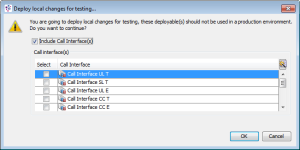

Deployment
A deployment is the process of producing a file that contains all the components that need to be executed at runtime.
The Deployment process can be activated from a number of places in the software:
- Explorer window - by right clicking on a deployable component(s) and selecting Deploy
- Label Management editor - by right clicking on the label and selecting Deploy. When Deploy is executed within the Label Management editor the deployment will collate all the deployable components and all their dependencies.
- Batch Process Flow - by creating a Batch Process Flow that contains a Label Deployment process or a Shared Version Deployment process. (The Shared Version Deployment process deploys the latest version of the deployable component along with the latest versions of all its dependencies).
| For Strategy Management this could mean deploying a label that contains a Decision Process Flow, the Call Interface(s) and Decision Reason Codes to produce a single deployment file | |
|
For Originations, one Business Process Composition (deployable component) and all its dependencies can be included in a label. |
Explorer window
When Deploy is selected within the Explorer window, the following context menu will be displayed
{kind=link}
- Deploy - opens the Deployment Wizard, where the user will go through step-by-step screens to complete the deployment process.
- Deploy local changes for testing - opens the Deploy local changes for testing dialog, where the user can quickly create a deployment based on the latest version of the component(s) that is available in the local area.
| Deployment files created using the Deploy local changes for testing dialog MUST not be used in production or in any shared environment, they have been designed for the purpose of testing locally or for use on a local environment. |
Once a Deployment file that is to be used in a production environment has been created it needs to be sanctioned which creates a deployment package that can be uploaded and processed at runtime. Deployment files that are to be used in testing do not need to be sanctioned.
| From version 1.16 of the Decision Analytics Servers onward, for each artifact created during the deployment process, a .checksum file will be created. The .checksum file will reuse the artifact name and will end with .checksum. These files allow users to manually validate that the deployed artifacts have not been modified before using them at runtime. Consult the Decision Analytics Servers Installation guide or Business Process Server Configuration guide for further information. |
There are several deployable components; examples include:
- Decision Process Flow
- Call Interface
- Decision Reason Code Table
- Business Process Composition
| Only one Decision Process Flow can be deployed on one label; the same label may include 0, 1, or many Call Interfaces and/or Decision Reason Codes. |
| Only one Business Process Composition can be deployed on one label. |
| Any Business Process Flows that contain scripting components that use Class Sets, Matrices or Index Tables, that have been defined against Logical Data Models, will throw deployment errors in the Business Process Composition. |
- Customer Management Solution
- Connectivity Composition Manager
| Only one Customer Management Solution can be deployed on one label. |
| Only one Connectivity Composition Manager can be deployed on one label. |
| Any Enrichment Access Strategies that contain scripting components that use Class Sets, Matrices or Index Tables, that have been defined against Logical Data Models, will throw deployment errors in the Connectivity Composition Manager. |
- Collections Composition
- Physical Data Transformation (Customer Management only)
| Only one Collections Composition can be deployed on one label. |
| In order to be able to deploy the user must have Deploy privileges assigned. For more information see the topic Assign Custom Capability Permissions. |
| Label deployment supports an embedded life-cycle status. When initially deployed, strategies (i.e., Decision Process Flow deployments) are identified as Pending and can be distributed onto testing platforms outside the studio environment. |
| The label deployment process is the same as the Deployment process that can be triggered from within the Batch Process Flow. The system uses the same validation and deployment rules. |
A Deployment is the process of collating the deployable components, such as a Decision Process Flow, the Call Interface(s) and Decision Reason Codes into a Label that can be deployed to produce a single deployment file.
To deploy a label
- Open the Label Management editor by selecting Label Management from the Window menu.
- Right click on the label to deploy, and select Deploy from the menu. To select more than one label, hold down the Ctrl key and click on the labels. The Label Deployment dialog is displayed.
- Provide a Label Suffix, and click Apply to All to add the suffix to the Edition Name. You can also edit the Edition Name and Deployment Notes directly.
- Provide notes for this deployment, if desired, and click Apply to All to add these notes to the Deployment Notes.
- You can override the edition number if you need to.
- Check the tickbox to select the label to deploy, and click Deploy.
In the case of Call Interface and Decision Reason Code table deployments, a new label edition is created and displayed in the Label Management editor with the status of Sanctioned  .
.
In the case of all other deployments, a new label edition is created and displayed in the Label Management editor with the status of Pending  . The pending label is now ready to be sanctioned or rejected.
. The pending label is now ready to be sanctioned or rejected.
In either case the original label remains and can be deployed again. The status of the deployment job can be further viewed in the Job Submission Console including the main deployed component name, which is visible in the Job and Name columns.
Using Batch Process Flow to create an XML of a deployed label
The user can create an XML of the deployed label, which is a snapshot of the system at the point of deployment. The user must run the deployment using a Batch Process Flow which contains a deployment job and an export job based on the specific label.
When the Batch Process Flow is submitted to the Job Submission Framework, it completes the deployment and produces the deployment files and the system export.xml file (the snapshot of the system).
See Batch Process Flow for details on the deployment process.
A deployment is the process of producing a deployment file that contains all the deployable components that need to be executed at runtime.
When Deploy is selected within the Explorer window, the following context menu will be displayed
- Deploy - activates the Deployment Wizard, where the user will go through step-by-step screens to complete the deployment process.
- Deploy local changes for testing - activates the Deploy local changes for testing dialog, where the user can quickly create a deployment based on the latest version of the component(s) that is available in the local area.
|
Deployment files created using the Deploy local changes for testing dialog should not be used in production. |
To deploy local changes for testing
- From the Explorer window, select the changed deployable component, right click and Select Deploy > Deploy local changes for testing.
The Deploy local changes for testing dialog will be displayed.
When there are Call Interfaces in your solution, for example in a Customer Management or Strategy Design Studio solution, you may need to select the appropriate Call Interface for the deployable component you have selected. - Select the Include Call Interface(s) check box if required
The Call interface(s) area will become activated. - Select the Call Interface(s) that are required.
- Click on the OK button to deploy these with the deployable component.
The Remote Job Notification dialog will be displayed. - Click on the OK button.
The Job Submission Console will be displayed, assuming that the Launch Job Submission Console check box is selected (default setting). - Within the Job Submission Console, select the USER_AREA_DEPLOYMENT_JOB job and the Output files will be listed.
{kind=link}
If the job has been successful a number of files will be created, for example:
- .ser file
- .jar file
- .xml file
- .txt file labelled DO NOT USE THESE FILES FOR PRODUCTION.
| The DO NOT USE THESE FILES FOR PRODUCTION.txt files is the only file that will always be generated. It contains a list of the components and the location modifications that have been made. |
The following is an example of the information contained in the log file produced for unsuccessful jobs:
- Deploy User ID : allaccessuser
- Deploy Date/Time : Thu Jan 19 15:22:17 GMT 2017
- Deploy Notes : This deployment is generated from user changes, it should not be used in production!
- Repository Name : http://W5141788.uk.experian.local:8095
- Strategy Details :
- Alias:
- Signature: Alpha
- Edition Number : 1
- Decision Process Flow : Pre-Bureau, Revision 1.0
- Software Version : Originations Design Studio v1.7
- Status : ERROR - The alias must be defined.
Changes made to deployed strategies can be labelled up as a change set and blended into one or more existing edition labels or with the repository tip revision using the Deployment Wizard.
| Before the user carries out the following steps it is assumed a set of components have changed and require deploying against the repository tip revision or merging with an existing label. |
To blend changed components into an existing deployed strategy or with the repository tip revision
- From the Explorer window, select all the changed component(s) or the deployable parent component for the change set and right click and Select Deploy.
- The Deployment Wizard is displayed.
- From the Check in screen, make sure that the component(s) you want to check in, as part of the change set, is selected.
- Type a comment in the Comment field. This field is mandatory.
- Click on the Label Chooser button, the Label Chooser dialog will open.
- Select a label from the list of existing labels or type in the name of a new label. This field is mandatory.
- Click on the Next button.
- In the Select a baseline for deploying screen, select the baseline deployable component that you want to merge the change set with by selecting one of the following check boxes to determine whether the change set is to be merged with an existing edition label or with the repository tip revision (latest checked in revision):
- Merge with Edition – select this check box to merge the change set label with a deployed strategy. Only the latest sanctioned edition label will be displayed in the Latest edition label column.
- Repository/Tip Revision – select this check box to merge the change set with the latest revision of the selected deployable component and its dependent components from the shared repository.
If there are sanctioned edition labels for the deployable component, the latest dated edition label will be displayed in the Latest edition label column and the Merge with Edition column will be selected by default You can change to select the Repository/Tip Revision column if required.
- Enter the Deployment Label name. This is the new label that consists of the merged change set label with the selected baseline as defined in step 7/8.
- Repeat step 8 to 9 for all the baselines you want to deploy the change set against.
- Click on the Next button.
- In the Deploy screen, type in an Edition Name. The default edition name will consist of the following format:
- <Change set Label Name><Deployment Label Name>.
- By default the deployment note is populated from the check in screen comment. This can be overwritten if required.
- The default Deployment procedure will be used to deploy the selected components unless the Custom Deployment Procedure option is selected. If this option is selected a Batch Process Flow deployment procedure must be available in the repository. The Custom Deployment Procedure option will launch a Batch Process Flow job rather than the default deployment procedure.
- The Expected Edition cannot be edited in the Deployment Wizard. The number displayed indicates the edition number that will be used to deploy the selected deployable component(s).
- Repeat steps 12 to 15 for all deployments listed.
- Click on the Next button to start deploying the Deployment label.
- In the Job summary screen, the job reference number of the deployed component(s) is displayed.
- Click on the Finish button to close the Deployment Wizard.
| To multi-select components in the Explorer you need to step inside the folder. | |
|
|
In the Explorer window, click on the |
| The Global Parameters for the Batch Process Flow need to be completed if a custom procedure is selected. |
| For deployments using the custom procedure - all deployments must use the same custom procedure. |
Once the Next button is clicked in the Deploy screen, the following actions will be carried out: - Changed components will be checked in The above actions cannot be reversed. |
The status of the Deployment job can be viewed in the Job Submission Console.
| A new label edition is created an displayed in the Label Management editor with the status of Pending. The pending label is now ready to be sanctioned or rejected. |
Custom Deployment Procedures are created using a Batch Process Flow, where users can construct a procedure from building blocks, including Deploy, Sanction, Export, Compress, Test, Report, Email and File Transfer. Deployment Procedures can be submitted directly or scheduled to run at a defined time (see the Batch Process Flow help) or they can be triggered in the Deployment Wizard.
| If using a custom deployment process from the wizard the Batch Process Flow must contain a Deployment process as a minimum. |
Prerequisites
Before using the Custom Deployment Procedure option in the Deployment Wizard, the user will need to define the global parameter values for the following parameters contained in the Batch Process Flow:
- Edition Name
- Deployment Notes (optional)
- Label
| The global parameters values are passed to the Batch Process Flow by the Deployment Wizard. Defining the parameters allows the Deployment Wizard to map the correct values into the correct fields. |
The parameters in the properties for each of the steps in the Batch Process Flow also need to be defined.
Once complete, the user will then need to configure the mapping between the global parameters and the Deployment Wizard parameters (see below).
| It is assumed that the previous Deployment Wizard steps have completed by the user before they select the custom deployment procedure. |
To define the custom deployment procedure
- In the Deploy screen, in the Custom Deployment Procedure column, select the check box.
- In the Custom Deployment Procedure section, select the relevant Batch Process Flow that you want to launch. The global parameters defined for the Batch Process Flow will be listed in the drop down lists.
- Select the correct global parameters to map the following fields:
- Label Name (mandatory)
- Edition Name (mandatory)
- Deployment Notes (optional)
The Label Name cannot have the same name as the Edition Name. - Click on the Next button to launch the selected Deployment procedure.
- In the Job summary screen, the job reference number of the deployed component(s) is displayed.
- Click on the Finish button to close the Deployment Wizard.
|
Once the Next button is clicked in the Deploy screen, the following actions will be carried out: - Changed components will be checked in The above actions cannot be reversed. |
The status of the Deployment job can be viewed in the Job Submission Console.
| If the Batch Process Flow that is selected also contains a Sanction process the new label edition that is created and displayed in the Label Management editor will have the status of sanction. | |
|
If the Batch Process Flow only contains a Deployment process the new label edition that is created and displayed in the Label Management editor will have the status of Pending. The pending label is now ready to be sanctioned or rejected manually from the Label Management editor. |